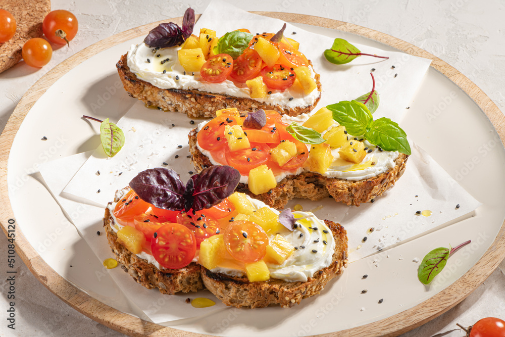
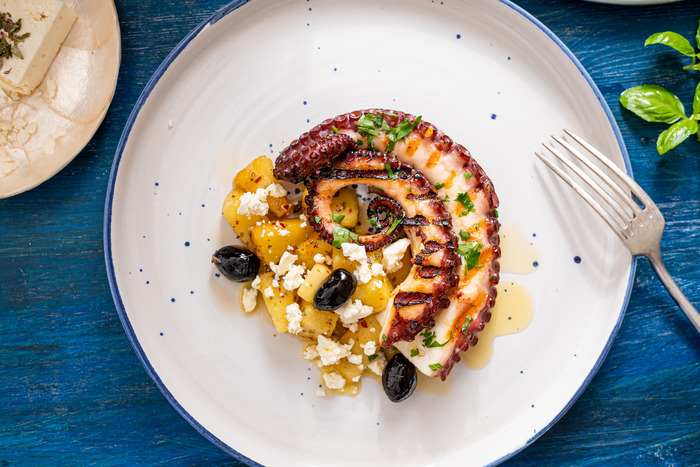
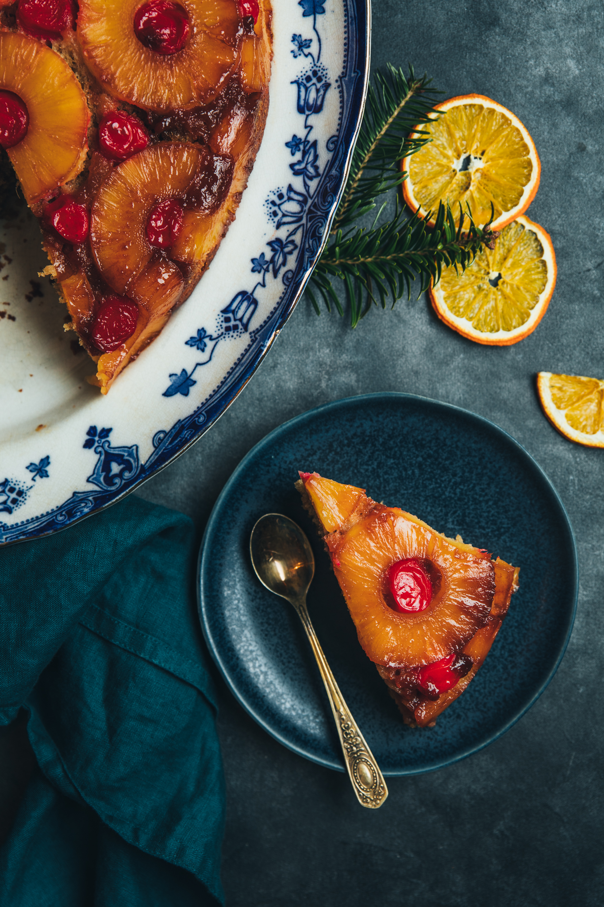

Retete
Ananasul nu este numai gustos, ci este si sanatos.
Acesta poate fi folosit la gatit, in preparate culinare inedite.
Incearca si tu aceste retete cu ananas si in mod cert vei fi multumit de rezultat. 
Bruschete cu ananas, crema de branza si dulceata de ardei iute
Ingrediente:
o bagheta pe care o vei felia subtire
crema de branza
ananas proaspat
dulceata de ardei iute
Reteta integrala 
Ananas spicy cu caracatita si feta
Ingrediente:
450g punga ananas bucati
350g tentacule caracatita prefierte
50ml ulei de masline
sare, piper, oregano dupa gust
1/2 lingurita fulgi chilli
100g branza feta
50g masline negre
1 legatura de patrunjel proaspat
Reteta integrala 
Prajitura rasturnata cu ananas si mirodenii
o conserva de ananas rondele
200g faina 000
8-10 cirese din compot sau confiate
1 lingurita praf de copt
1/2 lingurita praf de copt
scortisoara, ghimbir, anason pudra dupa gust
un praf de sare
100g zahar alb
100g+2 linguri zahar brun
125g unt moale+50g unt topit
2 oua
150g iaurt gras
Reteta integrala Meniu
Acasa
Prezentare generala
Galerie
Despre autor